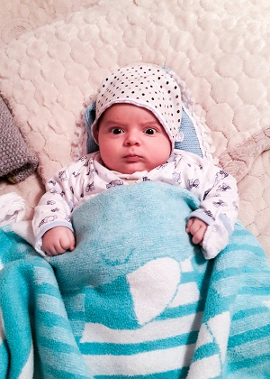

Rail İmanzadə 11 fevral 2017-ci ildə Bakı şəhəri, Azərbaycan Respublikasında anadan olmuşdur. O, İmanzadə Qoçaq və İmanzadə Şəhlanın oğludur. Onun valideynləri dövlət qulluqçularıdır. Rail onların birini oğludur. O, hələ 5 aylıqdır amma ayaqüstə durmağa, danışmağa çalışır. O, hələ ki, yalnız 2 söz deyə bilir: "Aquu" və "Vaquu". Bu sözlərin mənası hələ də sirr olaraq qalır.